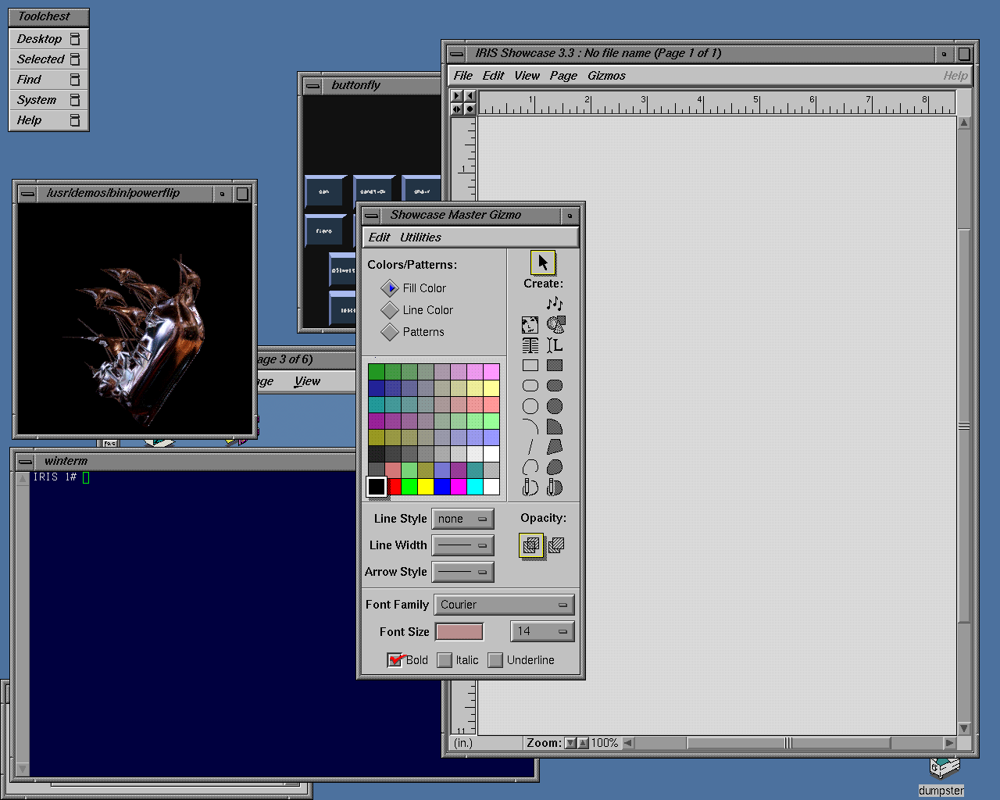

Fullscreen mode
Just press »F« on your keyboard to show your presentation in fullscreen mode. Press the »ESC« key to exit fullscreen mode.
Overview mode
Press "Esc" or "o" keys to toggle the overview mode on and off. While you're in this mode, you can still navigate between slides, as if you were at 1,000 feet above your presentation.
OpenGL
Lesson 1
Author: Egoshkin Danila Igorevich
History
1980
Silicon Graphics (SGI)


Silicon Graphics (SGI)
Its initial market was 3D graphics computer workstations
IRIS GL
IRIS GL (Integrated Raster Imaging System Graphics Library) is a proprietary graphics API created by Silicon Graphics (SGI) in the early 1980s 1992
IRIS GL -> OpenGL + OpenSource + Best Manual - Лучшая ДокументацияSGI Massive growth
Ed McCracken was CEO of Silicon Graphics from 1992 to 1997. During those years, SGI grew from annual revenues of $80.4 million to $3.7 billion.$250.000


DirectX VS OpenGL

CPU & GPU

CPU Vs GPU
CPU
f(f(f(f(f(x)))))( ((1+1)*10)+(10+100) )*1000
tg(cos(sin(x)))
GPU
pixel(x,y) = mesh(x,y) + mesh(x,y).texture(x,y) + ...(x,y);GPU
pixel(x,y) = mesh(x,y) + mesh(x,y).texture(x,y) + ...(x,y);
CPU & GPU
 ALU - arithmetic and logic unit. (h254)
CU - control unit - how to respond to the instructions that have been sent to the processor.
ALU - arithmetic and logic unit. (h254)
CU - control unit - how to respond to the instructions that have been sent to the processor.
GPU


OpenGL
Interface interaction API
GLUT, FreeGLUT, GLFWOpenGL Loading Library
GLEW, GLAD, glLoadGen, GLXW, libepoxy
GLUT, FreeGLUT, GLFW
GLUT - 1998GLFW - for now
It provides a simple API for:
Creating windows, contexts, reading input, handling events, events of mouse, keyboard, touch and etc.
OpenGL Loading Library
GLEW, GLAD, glLoadGen, GLXW, libepoxy
GLEW - OpenGL Extension Wrangler LibraryGLAD - Multi-Language GL/GLES/EGL/GLX/WGL Loader-Generator based on the official specs.
This is a library that loads pointers to OpenGL functions at runtime.
Дело в том, что доступ к функциям OpenGL осуществляется через подгрузку динамических библиотек. На разных платформах эти динамические библиотеки загружаются по-разному, да и находятся в разных местах. Собственно, лоадеры предназначены для того, чтобы скрыть эти различия от программиста.
Windows, Linux, MacOS, Android
PlayStation, XBox, Nintendo, Sega Mega Drive
NVIDIA (ASUS, MSI, ...), AMD Radeon (ASUS, MSI, ...), PowerVR, Mali GPU
Дело в том, что доступ к функциям OpenGL осуществляется через подгрузку динамических библиотек. На разных платформах эти динамические библиотеки загружаются по-разному, да и находятся в разных местах. Собственно, лоадеры предназначены для того, чтобы скрыть эти различия от программиста.
Windows, Linux, MacOS, Android
PlayStation, XBox, Nintendo, Sega Mega Drive
NVIDIA (ASUS, MSI, ...), AMD Radeon (ASUS, MSI, ...), PowerVR, Mali GPU
// define the function's prototype
typedef void (*GL_GENBUFFERS) (GLsizei, GLuint*);
// find the function and assign it to a function pointer
GL_GENBUFFERS glGenBuffers = (GL_GENBUFFERS)wglGetProcAddress("glGenBuffers");
// function can now be called as normal
unsigned int buffer;
glGenBuffers(1, &buffer);
Benefits & Advantages
Benefits & Advantages
1. Base OpenGL knowledge
2. GLSL - high-level shading language
3. Base 3D vfx methods
What for???
AMC Bridge
Black Wing Foundation (REBRANDING - now Pingle Studio)
Pingle Studio (old Black Wing Foundation)
Playtika
Lab Work 1
glfwWindowHint(GLFW_SAMPLES, 4); // 4x Сглаживание
glfwWindowHint(GLFW_CONTEXT_VERSION_MAJOR, 3); // Мы хотим использовать OpenGL 3.3
glfwWindowHint(GLFW_CONTEXT_VERSION_MINOR, 3);
GLFWwindow * glfwCreateWindow (int width, int height, const char *title, GLFWmonitor *monitor, GLFWwindow *share)
GLFWwindow* window; // (В сопроводительном исходном коде эта переменная является глобальной)
window = glfwCreateWindow( 640, 480, "Lesson 01", NULL, NULL);
glfwTerminate();